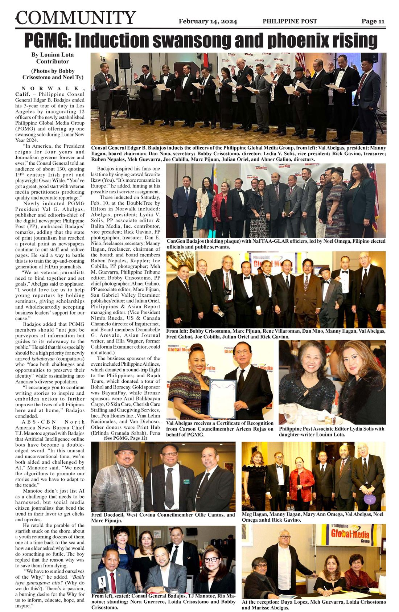
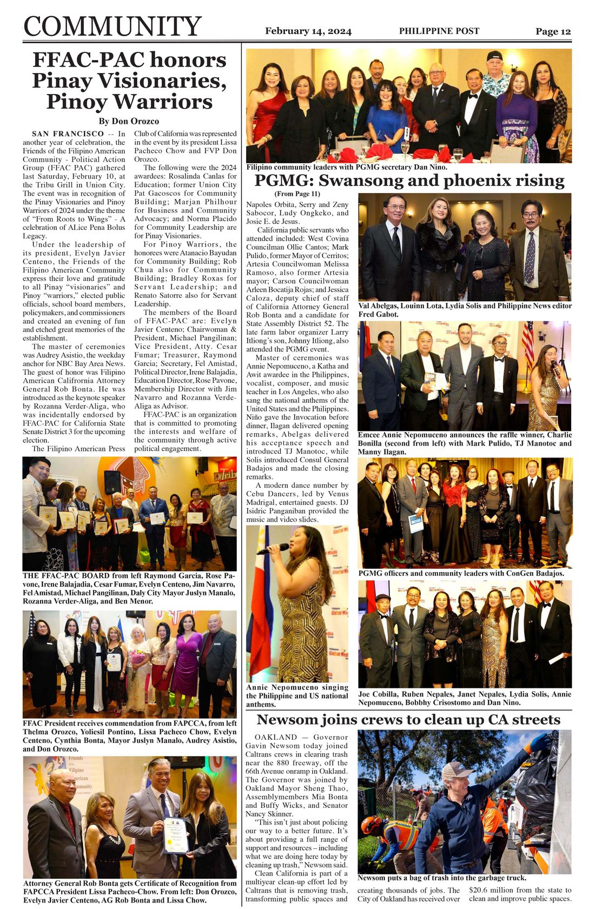
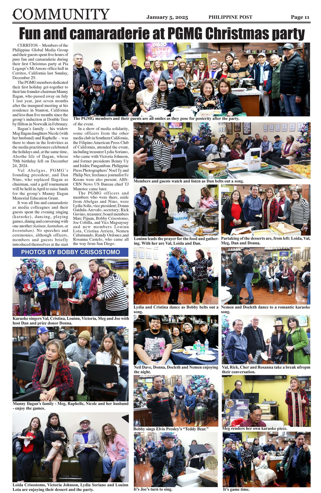

How four journalists over lunch at an IHOP in Cerritos grew into the Philippine Global Media Group — a network connecting Filipino journalists across the diaspora.
In early October 2023, four local journalists met at the IHOP restaurant in Cerritos to discuss the possibility of organizing a media group in Southern California. The immediate goal was simple enough. At that time, the Philippine Department of Tourism was planning to invite a group of US-based journalists to a media tour of Philippine tourism destinations.
The group was led by Manny Ilagan, a former regional director of the DOT in Los Angeles (PDOTLA) and a regular travel writer for the Philippine Post. He was asked by then Tourism Secretary Cristina Garcia Frasco to invite some California-based journalists for the media tour. The secretary told him to make sure the group would be composed of legitimate writers as they were expected to write about their travel experience in the Philippines.
Manny called journalists Lydia V. Solis, chief Los Angeles correspondent of Philippine News; Nimfa U. Rueda, then LA correspondent of Inquirer.net; and myself, Val G. Abelgas, a veteran Manila editor and publisher and editor-in-chief of the Philippine Post, to a lunch-meeting at the Cerritos restaurant to discuss the possibility of organizing a new media group in Southern California.
Less than two weeks later, the four of us were meeting with a few LA-based journalists at Manny's residence in the city of Stanton in Orange County. I suggested we don't use the word press club as there have been so many press clubs in Southern California and that perhaps we could use the phrase "media group" instead, so it would be less formal.
The talks later evolved into the possibility of expanding the group to include other Filipino journalists from other cities in the cities, very much like the Federation of Filipino American Media Associations (FFAMAS) that I helped found in November 1993 during the first National Convention of Filipino Editors in America that I organized with then press attache Roy Gorre with the then visiting Philippine President Fidel V. Ramos as guest speaker at the LA Sports Arena in Inglewood.
"And why not invite other Filipino journalists from all over the Filipino Global Diaspora since most newspapers were converting to digital format and there were many ways to communicate with them online? That's when we decided to name the group the Philippine Global Media Group."
— Val G. Abelgas, Founding PresidentA simple goal of joining a Philippine media tour and suddenly turning it into a lofty mission of bringing together Filipino journalists from all over the world, helping them adjust to a fast-evolving digital media world, improve their craft, meeting the information needs of the Global Filipino Diaspora, and preparing the young generation of Filipinos to take over this lofty mission in the near future. The group's own evolution happened in just the initial meeting over sumptuous merienda prepared by Bobby and Loida Crisostomo, and Manny's wife Meg Ilagan.
And so, the Philippine Global Media Group (PGMG) was born.
After a few more meetings, the PGMG was registered as a 501-c3 non-profit organization with the help of Dan E. Nino.
The first set of officers were elected, as follows: Val G. Abelgas, publisher and editor-in-chief of Philippine Post (PP), president; Manny Ilagan, PP travel contributor, chairman of the board; Lydia V. Solis, PP associate editor & Balita Media, Inc. contributor, vice president; Rick Gavino, PP photographer, treasurer; Dan E. Niño, freelance journalist, secretary; and board members Ruben Nepales, Rappler; Joe Cobilla, PP photographer; Meh M. Guevarra, Philippine Tribune editor; Bobby Crisostomo, PP chief photographer; Abner Galino, PP associate editor; Marc Pijuan, San Gabriel Valley Examiner publisher-editor; Julian Escobar Oriel, Philippines & Asian Report managing editor; and Donnabelle Gatdula-Arevalo, Asian Journal writer.
The officers were inducted during PGMG's inaugural Induction and Gala Night attended by more than 120 community leaders, elected Filipino local officials, and guests at the Vineyard Ballroom of Double Tree by Hilton Los Angeles-Norwalk on February 10, 2024, less than three months after its founding.
Guest speaker and inducting officer was then Consul general Edgar Badajos, with ABS-CBN North America News Bureau chief TJ Manotoc as inspirational speaker.
California public servants who attended included West Covina Councilman Ollie Cantos; Mark Pulido, former Mayor of Cerritos; Artesia Councilwoman Melissa Ramoso, also former Artesia mayor; Carson Councilwoman Arleen Bocatija Rojas; and Jessica Caloza, deputy chief of staff of California Attorney General Rob Bonta and then a candidate for State Assembly District 52, which she won and has since served with distinction. The late farm labor organizer Larry Itliong's son, Johnny Itliong, also attended the PGMG event.
The group was apparently destined to be Manny Ilagan's legacy. Less than five months later on July 1, 2024 while leading the organizing committee of a PGMG golf fund-raiser, Manny succumbed peacefully to a long bout with cancer. In his honor, PGMG has named its scholarship program as the Manny Ilagan Memorial Educational Fund.
The group also pledged to pursue the golf fund-raising project meant to raise funds for the PGMG scholarship program that he was working on while undergoing painful chemotherapy sessions.
After the induction, many more journalists joined the group and the set of officers continued to evolve, with Dan Nino taking over Manny's post as chairman of the board. The new set of officers includes Dan Nino, president; Val Abelgas, chairman; Lydia Solis, Nimfa Rueda and Jannelle So, vice presidents; Donna Arevalo, secretary; Meg Ilagan, PP associate publisher, treasurer; Rick Gavino, auditor; Ellen Rodrigue-Swing and Joe Cobilla, press relations officers; and members of the board: Marc Pijuan; Louinn Lota, PP contributor; Albert G. Gabot, Philippine News Today editor-in-chief; Meh Guevarra, editor of Philippine Tribune; Bobby Crisostomo, PP chief photographer; Julian Escobar Oriel; Vics Magsaysay, freelance writer; Joy Marino, USA Today and Balita advertising manager; Doeleth Gatdula, The Filipino Correspondents Network and PP contributor; Nemen Cabatuando, IT and graphics designer; Benny Uy, freelance photographer; Isidric M. Panganiban, videographer; Mylene Capati, PP contributor; Eddie C. Ferrer, broadcaster; and Mel T. Velasco, Philippine News Today columnist.
The PGMG will hold its second Induction and Gala Night and celebrate its third anniversary on August 8, 2026 at the Crystal Ballroom of the Cerritos Sheraton Hotel. Guest speaker and inducting officer will be Consul General Adelio Angelito S. Cruz, with Cerritos Mayor Lynda P. Johnson as inspirational speaker.
With new and younger members, PGMG hopes to passionately pursue its lofty goals for the community and young Filipino journalists and would-be journalists for future generations of Filipinos in the Global Diaspora.
Manny Ilagan, Lydia V. Solis, Nimfa U. Rueda, and Val G. Abelgas meet in Cerritos to discuss forming a media group ahead of a Philippine Department of Tourism media tour.
A follow-up gathering at Manny Ilagan's Stanton residence expands the vision beyond Southern California to Filipino journalists across the Global Diaspora. The group takes the name Philippine Global Media Group.
With the help of Dan E. Niño, PGMG is formally registered as a nonprofit organization, and its first set of officers is elected.
Just three months after its founding, PGMG inducts its first twelve officers before more than 120 community leaders, elected Filipino local officials, and guests at the Vineyard Ballroom of the DoubleTree by Hilton Los Angeles – Norwalk. Consul General Edgar B. Badajos inducts the officers and delivers the keynote, quoting Oscar Wilde: "You've got a great, good start with veteran media practitioners producing quality and accurate reportage." ABS-CBN North America News Bureau Chief TJ Manotoc serves as inspirational speaker. California public servants in attendance include West Covina Councilman Ollie Cantos, former Cerritos Mayor Mark Pulido, former Artesia Mayor and Councilwoman Melissa Ramoso, Carson Councilwoman Arleen Bocatija Rojas, and Jessica Caloza, then deputy chief of staff to California Attorney General Rob Bonta and a candidate for State Assembly District 52 — a seat she would go on to win. Johnny Itliong, son of the late farm labor organizer Larry Itliong, also attends.
Less than five months after the induction, founding chairman Manny Ilagan passes away peacefully after a long bout with cancer, while leading the organizing committee of a PGMG golf fundraiser. In his honor, PGMG names its scholarship program the Manny Ilagan Memorial Educational Fund, and pledges to carry forward the fundraiser he was organizing through chemotherapy.
Many more journalists join PGMG. Dan Niño steps into Manny Ilagan's role as chairman of the board, and the roster of officers and members continues to expand.
PGMG members and guests gather for five hours of fun and camaraderie at Pia Legaspi's Mi Amore office hall in Cerritos — their first holiday get-together, dedicated to the memory of Manny Ilagan. The evening also marks what would have been Ilagan's 70th birthday, December 24.
PGMG members and officers are recognized with California Legislature Assembly Certificates of Recognition, represent the group at Philippine Independence Day celebrations across Southern California, and are welcomed at a Philippine Consulate General reception with Presidential Assistant for Northern Luzon Ana Carmela Remigio.
PGMG celebrates its third anniversary and holds its second Induction and Gala Night at the Crystal Ballroom of the Cerritos Sheraton Hotel. Consul General Adelio Angelito S. Cruz serves as guest speaker and inducting officer, with Cerritos Mayor Lynda P. Johnson as inspirational speaker.
Inducted on February 10, 2024 at the DoubleTree by Hilton Los Angeles – Norwalk, before more than 130 community leaders, elected Filipino officials, and guests.
PGMG's founding chairman and the man whose lunch invitation at an IHOP in Cerritos set everything in motion. A former regional director of the Philippine Department of Tourism in Los Angeles and a longtime travel writer for the Philippine Post, Manny led the group from its very first meeting through its inaugural Induction and Gala Night on February 10, 2024.
Less than five months later, on July 1, 2024, Manny succumbed peacefully to a long bout with cancer while leading the organizing committee of a PGMG golf fundraiser — work he continued through painful chemotherapy sessions. PGMG carries his legacy forward through the Manny Ilagan Memorial Educational Fund, a scholarship program for Filipino journalism and mass communication students.
Founding Chairman, PGMGA look back at how PGMG's earliest milestones were covered in print — from the inaugural Induction Night to the first Christmas party.

February 14, 2024 — Coverage of the inaugural Induction and Gala Night, with Consul General Edgar Badajos inducting the first twelve PGMG officers.

February 14, 2024 — The story continues with photos of community leaders, PGMG officers, and Consul General Badajos at the induction night.

January 5, 2025 — PGMG's first Christmas party in Cerritos, dedicated to the memory of founding chairman Manny Ilagan.
We're gathering more photos and clippings from PGMG's first two-and-a-half years. If you have images from meetings, events, or the PGMG Facebook page, we'd love to include them.